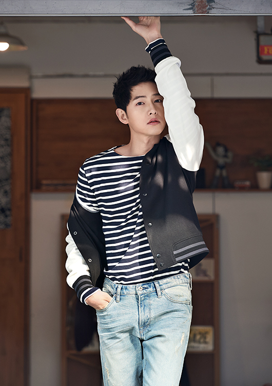

宋仲基，1985年9月19日出生于韩国大田广域市，韩国演员、主持人。 2008年出演电影《霜花店》进入演艺圈。2009年在音乐节目Music Bank中担任主持，后在艺能节目《Running man》中担任固定嘉宾（E01——E41）。2010年出演电视剧《成均馆绯闻》具龙河一角，获得KBS演技大赏最佳人气奖。2011年在电视剧《树大根深》中饰演青年世宗，获得SBS演技大赏PD奖。2012年接拍KBS水木剧《善良的男人》，在KBS演技大赏中获得最佳男演员奖、网络人气奖及最佳情侣奖。同年主演的电影《狼族少年》上映，正片票房达665万观影人次，累计突破700万观影人次，凭此片获得第49届百想艺术大赏电影部门最佳男演员提名。 宋仲基于2013年8月27日入伍，于2015年5月26日退伍。2016年2月主演KBS水木剧《太阳的后裔》，凭借该剧获得第52届百想艺术大赏电视部门最佳人气男演员奖，APAN STAR AWARDS最高演技大赏，KBS演技大赏最高演技大赏。
宋仲基于1985年9月19日出生于韩国大田广域市，是家中的二儿子，家中还有一兄一妹。宋仲基在小学时期就读于大田圣母小学，初中时期就读于大田中学，从小学到初中二年级一直是大田代表队的短道速滑选手，有6年作为大田广域市的代表选手，并参加过三次全国体育大会。后来因为脚腕负伤才中途放弃，转攻学业。经过努力，升入初三的宋仲基成为副班长和学生会会长。 宋仲基的高中时期就读于南大田高等学校。进入高中后，宋仲基在高一时被表彰为模范生，高二是学生会会长，高三时获表彰功劳奖。高三时所有科目全部是“优”，英文和数学全校第一。 家里很反对他进演艺科，要求他考上非演艺科大学才能接触演艺圈。他第一年考上的并不是理想中的大学，复读一年，第二年他以成绩380分（满分400分）全国排名前十的优异成绩考上了韩国成均馆大学经营系。宋仲基在大学主修经营管理辅修新闻放送，是学校电视台的主播，新闻放送社团的团长，还是学校封面模特和招生广告模特，被称为“成大校草” 宋仲基的志向一直是进幕后做PD或者播音员，第一次上电视是临时代替发烧的学长，去参加KBS电视台举行的全国智力大赛节目，一举夺得了亚军。
2008年，宋仲基以饰演电影《霜花店》中36建龙卫侍卫之一正式出道。通过该部电影，宋仲基和主演赵寅成、林周焕、赵成民成为了要好的朋友。后来签约了赵寅成当时的经纪公司IHQ。同年，宋仲基还参演家庭剧《我的爱金枝玉叶》，饰演三儿子张振好。 2009年，在电视剧《Triple》中饰演池风宇。后在电视剧《拜托小姐》中客串出演只有五秒钟戏份的一名管家。同年宋仲基担任了KBS音乐节目《音乐银行》的MC[13] 。12月，宋仲基在电视剧《圣诞节会下雪吗》客串女主角的哥哥，得到了作家李庆熙的注意，成为宋仲基出演《善良的男人》的契机[14] 。 2010年，宋仲基在电视剧《妇产科女医生》中饰演妇产科实习医生安靖宇。后又与中国演员张翰合作出演了《心心历险记2》[15] 。同年，宋仲基加入SBS电视台艺能节目《Runningman》成为固定嘉宾，后因专注演技退出[16] 。此外，出演电视剧《成均馆绯闻》女林一角让宋仲基被观众所熟知。凭借此剧，宋仲基在年底的KBS演技大赏中获得人气奖及中篇剧集男子优秀演技奖提名[17] 。 2011年，宋仲基搭档同公司演员韩艺瑟出演电影《攒钱罗曼史》。下半年，加入电视剧《树大根深》，在剧中扮演青年世宗，仅有四级戏份，出演的第四集收视就达18.8%[1] ，并且因为精彩的演出，编剧为他重写剧本，也将整部电视剧的主线从刺客主线转为了世宗大王作为主线，给韩国演艺圈引起极大的轰动，被各大制作公司300名电视剧制作PD票选为最想合作的演员，并在年底的SBS演技大赏凭借仅有四集戏份的《树大根深》获得PD奖[1] 。 2012年，宋仲基接拍了KBS电视台水木剧《善良的男人》，在电视剧中首次担任男主角，该剧播出三集后便位居同时段收视冠军，最高收视率达18.8%[19-20] 。同年，宋仲基主演的电影《狼族少年》上映，正片票房达665万4842观影人次，与加长版累计票房706万8920观影人次，打破了之前《建筑学概论》作为纯爱电影类型片所创下的410万观影人次的票房记录[21] 。电影公映前已于多伦多国际电影节、温哥华国际电影节和釜山国际电影节等多个电影节展映[22] 。宋仲基也凭借该片在第49届百想艺术大赏提名电影部门最佳男主演[23] 。 2013年1月，宋仲基参演的《善良的男人》在日本进行首播，之后台湾、香港也相继播出。2月，宋仲基正式加盟车太贤所在经纪公司BLOSSOM娱乐。8月10日，宋仲基参演的《善良的男人》于登陆安徽卫视。宋仲基也凭借《善良的男人》获得第20届韩国文化演艺大奖电视剧最佳男演员奖、K-DRAMA STAR AWARDS最佳男演员奖 、KBS演技大赏男子最优秀演技奖、网络人气奖及最佳情侣奖[19] 。 2016年2月24日，与宋慧乔、晋久、金智媛合作主演的KBS 2TV水木剧《太阳的后裔》首播，宋仲基在剧中饰演特战部队大尉柳时。该剧首播收视达14.3%[25] ，最高收视达38.8%[26] ，播出后位居同时段收视冠军，并获得第52届韩国百想艺术大赏大赏[27] 。宋仲基也凭借柳时镇一角色入围第52届韩国百想艺术大赏最佳男演员奖[28] ，获得最佳人气男演员奖和爱奇艺韩流人气奖[29] ，第11届韩国电视剧大奖韩流剧集最佳男主角奖[30] 等多项奖项，摘得第六届APAN Star Awards[7] 以及KBS演技大赏[8] 最高演技大赏。同年在韩国大众文化艺术奖上被授予总统表彰[31] 。5月，在漫画改编电视剧《心里的声音》中客串[24] 。7月16日晚，“宋仲基亚洲巡回粉丝见面会2016”上海站于上海大舞台举行了该次巡回见面会的最后一站演出[25] 。7月[32] ，与黄政民、苏志燮合作，主演战争电影《军舰岛》，饰演朴武英[33] 。